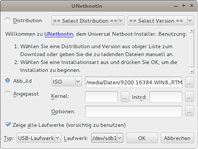

Windows-Installations-Stick erstellen
Dieser Artikel wurde für die folgenden Ubuntu-Versionen getestet:
Ubuntu 16.04 Xenial Xerus
Ubuntu 14.04 Trusty Tahr
Zum Verständnis dieses Artikels sind folgende Seiten hilfreich:
 Mit UNetbootin ist es auch möglich, sich einen Windows-Installations-USB-Stick zu erstellen. Dieser ist zum Beispiel für Geräte ohne optische Laufwerke notwendig bzw. erspart einen externen DVD-Player.
Mit UNetbootin ist es auch möglich, sich einen Windows-Installations-USB-Stick zu erstellen. Dieser ist zum Beispiel für Geräte ohne optische Laufwerke notwendig bzw. erspart einen externen DVD-Player.
Hinweis:
Das geschilderte Vorgehen funktioniert nur im BIOS-Modus. Eine Windows-Installation im UEFI-Modus ist mit dieser Methode nicht möglich. Dazu siehe Windows-Installation vom USB-Stick.
Installation¶
In aktuellen Versionen fehlt die Möglichkeit zur Erstellung eines Windows-Installations-Sticks, weshalb eine ältere Version manuell installiert werden muss.
Sofern UNetbootin bereits installiert ist, sollte diese zuerst mit
sudo apt-get purge unetbootin
entfernt werden.
UNetbootin benötigt das Paket p7zip-full, welches vorher installiert werden muss.
p7zip-full (universe)
 mit apturl
mit apturl
Paketliste zum Kopieren:
sudo apt-get install p7zip-full
sudo aptitude install p7zip-full
Anschließend kann dann die notwendige Version manuell heruntergeladen und installiert werden.
Für 32-Bit-Systeme:
wget http://old-releases.ubuntu.com/ubuntu/pool/universe/u/unetbootin/unetbootin_471-2ubuntu1_i386.deb http://old-releases.ubuntu.com/ubuntu/pool/universe/u/unetbootin/unetbootin-translations_471-2ubuntu1_all.deb && sudo dpkg -i unetbootin_471-2ubuntu1_i386.deb unetbootin-translations_471-2ubuntu1_all.deb
Für 64-Bit-Systeme:
wget http://old-releases.ubuntu.com/ubuntu/pool/universe/u/unetbootin/unetbootin_471-2ubuntu1_amd64.deb http://old-releases.ubuntu.com/ubuntu/pool/universe/u/unetbootin/unetbootin-translations_471-2ubuntu1_all.deb && sudo dpkg -i unetbootin_471-2ubuntu1_amd64.deb unetbootin-translations_471-2ubuntu1_all.deb
Achtung!
Mit der nächsten Systemaktualisierung wird diese Version durch die aktuelle Version ersetzt. Wer diese Version regelmäßig verwenden möchte, muss also die Pakete für die Aktualisierung sperren. Wie dies funktioniert, ist dem Artikel Apt-Pinning zu entnehmen.
Partitionierung und Formatierung¶
Auf dem USB-Stick muss eine primäre Partition existieren, die mindestens die Größe des ISO-Images hat. Diese muss zwingend in NTFS formatiert und zwingend die erste primäre Partition auf dem Datenträger sein.
Die NTFS-Partition auf dem USB-Stick muss eingehangen sein.
Programm starten¶
Man kann das Programm über den Starter im Menü starten:
"Anwendungen → Systemwerkzeuge → UNetbootin"
Unter Unity kann das Programm über die Dash per Eingabe des Namens gestartet werden.
Unabhängig von der Desktopumgebung lässt sich das Programm per
gksudo unetbootin
starten.
Bedienung¶
Die Bedienung ist relativ einfach.
Das Windows-ISO ist unter dem Punkt Abbild auszuwählen.
Es muss ein Häkchen vor dem Punkt Zeige alle Laufwerke gesetzt werden
Die Partition auf dem USB-Stick muss ausgewählt werden.
Achtung!
An dieser Stelle sollte man die Auswahl doppelt überprüfen, damit keine Partition versehentlich überschrieben wird!
Daten auf den Stick schreiben¶
Zuletzt wird nur noch mit OK bestätigt und die Daten werden auf den USB-Stick geschrieben.
Problem "NTFS formatierter USB Stick nicht sichtbar unter Laufwerk"¶
Bei neueren Versionen von UNetbootin fehlt die Option Zeige alle Laufwerke und NTFS formatierte Medien werden nicht unter Laufwerke gelistet. Man kann jedoch das gewünschte Laufwerk beim Start des Programms mitgeben. Zuerst die Partition des USB-Sticks in einem Terminal identifizieren:
sudo parted -l
... Modell: SanDisk Cruzer Fit (scsi) Festplatte /dev/sdb: 4005MB Sektorgröße (logisch/physisch): 512B/512B Partitionstabelle: msdos Disk-Flags: Nummer Anfang Ende Größe Typ Dateisystem Flags 1 1049kB 4005MB 4003MB primary ntfs ...
Hier wäre es Partition Nummer 1 auf /dev/sdb, also /dev/sdb1.
Jetzt UNetbootin starten (XY entsprechend eigener Ausgabe anpassen):
gksu unetbootin installtype=USB targetdrive=/dev/sdXY

- Erstellt mit Inyoka
-
 2004 – 2017 ubuntuusers.de • Einige Rechte vorbehalten
2004 – 2017 ubuntuusers.de • Einige Rechte vorbehalten
Lizenz • Kontakt • Datenschutz • Impressum • Serverstatus -
Serverhousing gespendet von